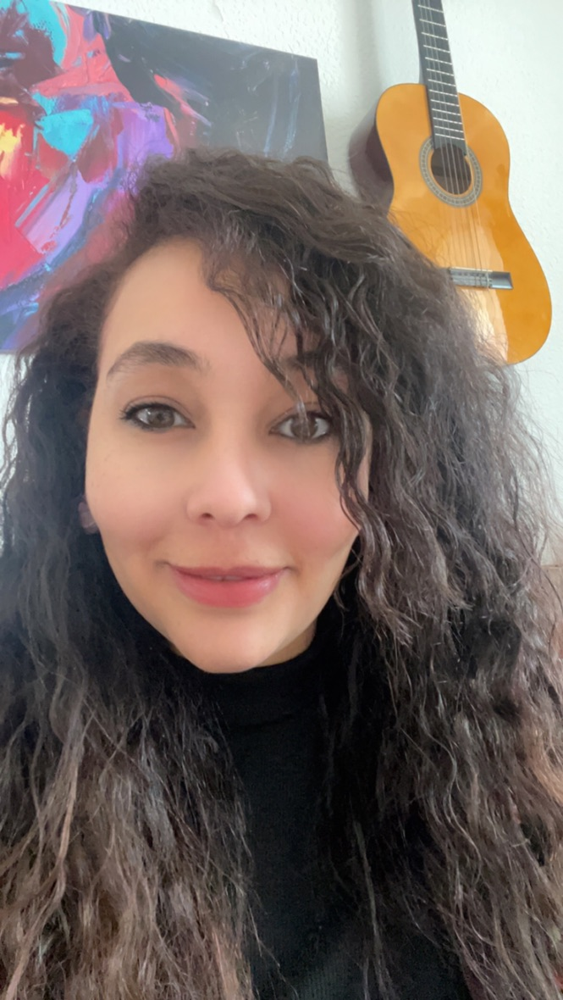

From Patient to Evidence.
From Evidence to Better Therapies.
EVIDARA is building a Saudi-focused evidence platform for rare diseases, clinical trials, real-world evidence and advanced therapies.
Services first. Platform later. Evidence always.
Rare-disease development needs local evidence.
For rare and genetically driven diseases, clinical-development decisions depend on understanding the patient population, relevant sites, biomarkers, treatment pathways and real-world context in the target market.
Patient visibility
Finding and characterizing eligible patients can be difficult when populations are small and distributed across specialist centers.
Trial feasibility
Protocol design requires realistic assumptions about population size, eligibility, sites and recruitment.
Evidence continuity
Clinical, laboratory and real-world evidence can sit across different systems and research workflows.
Saudi Arabia is expanding its clinical and biotechnology ecosystem.
The national environment is creating new opportunities for clinical research, biotechnology, real-world evidence and rare-disease development.
Real-world evidence is becoming part of the development conversation.
SFDA published a framework for the use of Real-World Data and Real-World Evidence in regulatory decision-making in April 2026. For EVIDARA, this reinforces the opportunity to build evidence workflows around Saudi-specific clinical and real-world data.
EVIDARA is being built carefully: validate real demand, establish the right institutional relationships, generate useful evidence, and only then scale the technology.
One evidence layer across the development journey.
EVIDARA is designed to help biopharma, biotech, diagnostics and research organizations answer Saudi-specific evidence questions — starting with services and evolving toward a platform.
EVIDARA Trial Intelligence
Saudi trial feasibility, patient-population analysis, site intelligence, recruitment intelligence and protocol-specific evidence.
EVIDARA Evidence Engine
Governed clinical, laboratory and real-world evidence workflows with traceable evidence provenance.
Advanced Therapy Evidence
Evidence and clinical-development support for rare diseases and advanced therapeutic modalities, without manufacturing the therapies themselves.
Rare diseases, precision medicine and advanced therapies.
The initial focus is deliberately narrow: build useful Saudi-specific evidence capabilities before expanding the platform.
Rare & Genomic Trials
Rare diseases, genetic diseases, precision medicine and evidence needs around emerging therapies.
Clinical & Lab Evidence
Biomarkers, laboratory evidence, diagnostics and clinical evidence workflows.
Real-World Evidence
Evidence generated from appropriate real-world sources through governed access, privacy and research workflows.
Research should not always require the patient to travel.
For appropriate protocols, EVIDARA envisions research pathways that can combine specialist centers with permitted remote and community-based activities.
Potential research pathways
Remote screening • telemedicine • home or local sample collection • remote monitoring • patient-reported outcomes • specialist-center procedures
Built around existing infrastructure
EVIDARA aims to work with existing Saudi healthcare, home-care and virtual-care capabilities rather than replace them with a new healthcare-delivery network.
Evidence and clinical-development support for organizations developing healthcare solutions in Saudi Arabia.
Pharma & Biotech
Trial feasibility, patient-population intelligence, evidence strategy and advanced-therapy development support.
Diagnostics
Laboratory, biomarker and clinical evidence workflows connected to research questions.
Healthcare & Research Organizations
Registry, evidence, research and collaboration opportunities through governed programs.
Potential Strategic Partners
Hospitals, specialist centers, research institutions, technology partners and organizations supporting Saudi clinical research.
Start useful. Build infrastructure. Scale with evidence.
Today
Evidence Services
Feasibility • patient population analysis •
site intelligence • recruitment intelligence •
RWE • lab/biomarker evidence
Next
Evidence Platform
Rare-disease registries • governed evidence networks •
research workflows • future Patient Passport
Long term
Patient Modeling
Patient-level modeling and trial simulation
after validation, data partnerships
and appropriate governance.
Patient Passport: one longitudinal evidence story.
EVIDARA envisions a consent-driven research profile that could help organize a patient's longitudinal research journey across relevant clinical, laboratory, treatment and outcome information.
Potential evidence domains
Clinical history • diagnoses • treatments • laboratory results • biomarkers • imaging summaries • research participation • outcomes • genomic information where appropriate
Patient-controlled participation
The long-term direction is consent-driven data sharing with clear governance and the ability to support appropriate research questions — not to replace the patient's medical record.
A Saudi-focused evidence direction.
Study-centric → Evidence-centric
Move from a single-study view toward connected evidence workflows.
Center-centric → Patient-access oriented
Design research pathways around how rare-disease patients can actually be reached.
Snapshot → Longitudinal evidence
Build toward evidence that can connect clinical, laboratory and real-world perspectives over time.
Generic view → Saudi-focused intelligence
Focus the evidence question on the Saudi clinical-development context.
From trial intelligence to patient modeling.
A staged approach: validate the evidence layer first, then expand only when data, partnerships and validation support the next step.
Built from laboratory science toward clinical evidence.

Nievein Ahmed
Founder & Clinical Research Professional
Medical Laboratory Scientist with a background in laboratory diagnostics and clinical research. Currently based in Germany and building EVIDARA with a clear Saudi-market focus.
I combine hands-on experience in laboratory science with practical understanding of clinical research workflows, and I am developing EVIDARA to help close the evidence gap for rare diseases and advanced therapies in Saudi Arabia.
What if every patient could contribute to a continuously evolving evidence story?
Clinical journeys, laboratory evidence, biomarkers, treatments and outcomes — connected through appropriate consent, governance and research partnerships.
Building the evidence layer for Saudi rare-disease development.
EVIDARA is currently in early development and market validation. We are open to discussions with investors and partners who share an interest in strengthening Saudi-specific evidence capabilities for rare diseases and advanced therapies.
Let's start a conversation.
EVIDARA is seeking conversations with Saudi healthcare organizations, research centers, biotech and pharma companies, diagnostics organizations, technology partners and potential investors.